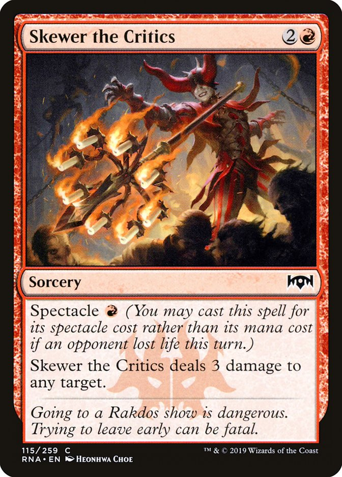
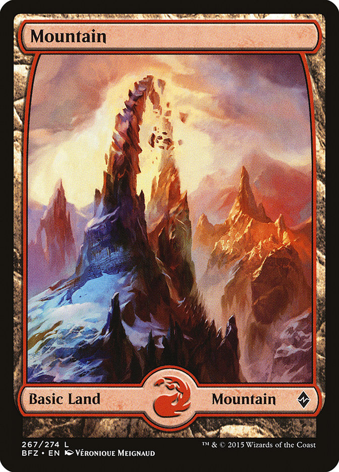
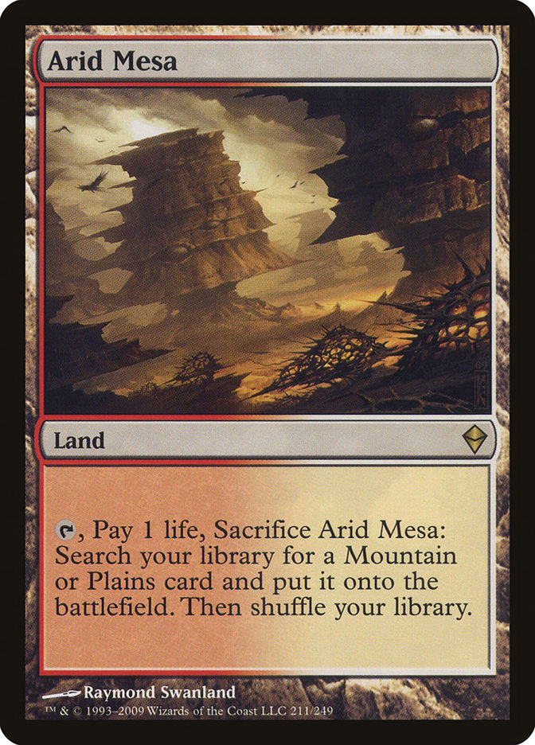
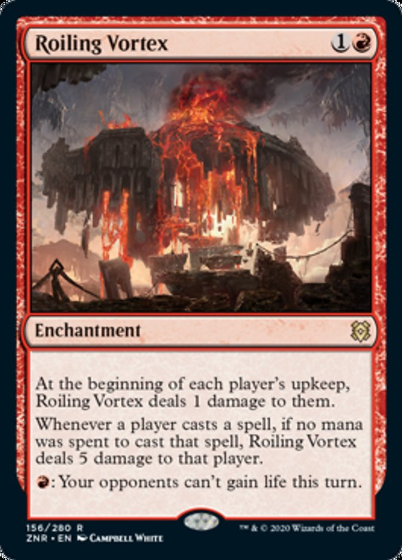
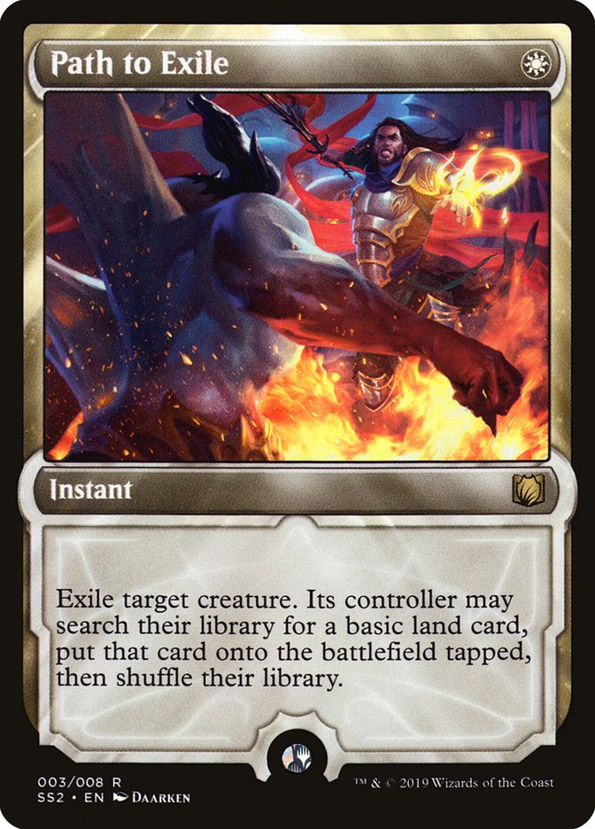
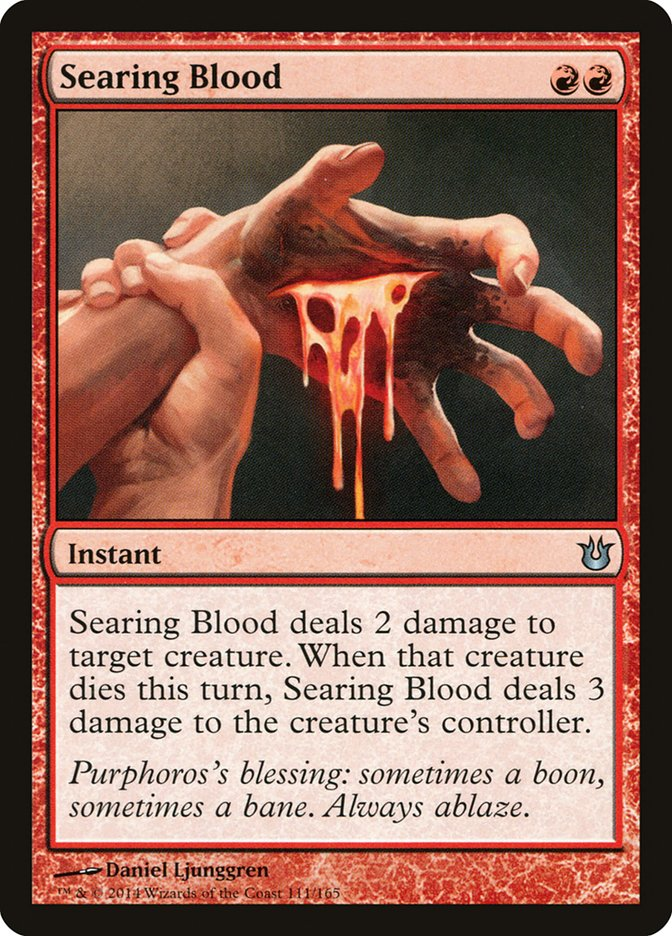
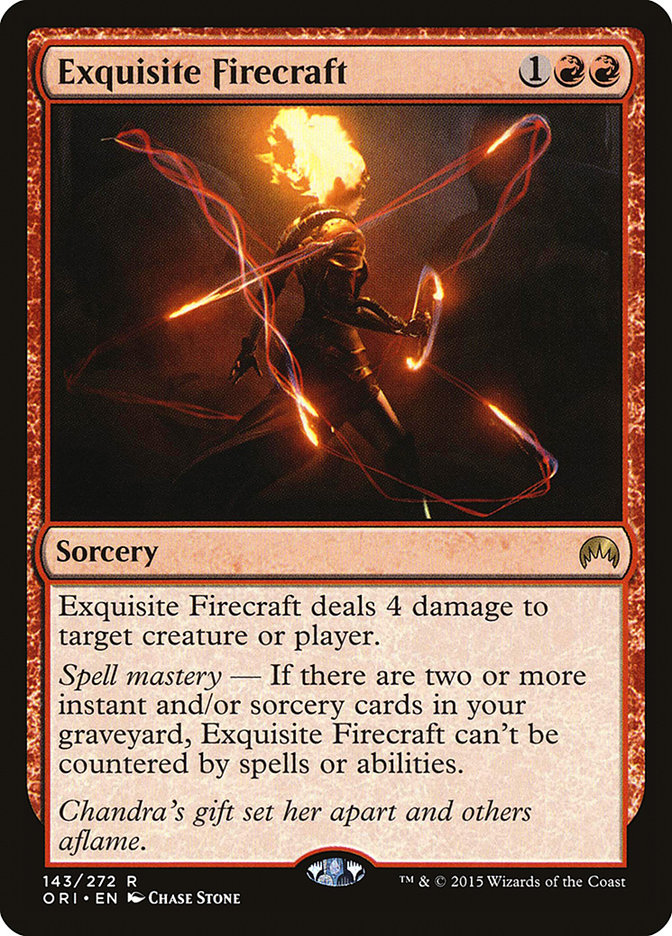

Sideboard Guide (December 2022)
If I were lazy (which, full disclosure, I am, but I'll try not to be when it comes to writing this guide), I'd slap whatever decklist I'm currently playing on MTGO, and then just tell you which cards I side in and out in each popular matchup. But that doesn't really work, for a couple of reasons. First of all, without understanding why cards are coming in, you won't really use them to their full extent. At the very least, I need to explain you why I'm bringing in certain cards for certain matchups (even if some choices are pretty straight forward). Then, you might also not be on my exact list. Your local meta might be different from what you see on MTGO (which is very likely given how inbred the MTGO meta can be), or you might just have some personal preference in cards (which I fully support, don't let me dissuade you from playing the cards you like. Except for Kor Firewalker, don't play that garbadge card). So I'm left with what some would call a "pickle", which is to build a sideboard guide that is adaptable to different lists, all while explaining with some detail why cards are being swapped for games 2 and 3. This guide is my attempt at doing that, but do note that:
- I could be wrong on things, and I'll update this guide whenever I realise that. Feel free to give me feedback on it.
- You can disagree with what I say here, and that is totally fine, because I'm not some asshole that thinks everyone else is wrong about things (again, except regarding Kor Firewalker, because that card is total garbadge).
Hopefully, even if your list diverges from the one I present here, you can still apply all or some of the knowledge in this guide to your games.
Fixed Slots
First things first, let me show you what cards I consider "fixed slots" in Burn. These are the cards that you should always be playing a playset of in any reasonable meta.
-
Goblin Guide

-
Monastery Swiftspear

-
Lightning Bolt

-
Lava Spike

- Skewer the Critics 
-
Rift Bolt

-
Boros Charm

Flexible Slots
Now come the so called "flex slots" of the deck. These are cards that are good enough to be played in the mainboard, but not in every meta, since they have a more specific use than just being very efficient at dealing damage. Because of this, I'd only really play more than 3 of a specific one if the meta becomes particularly weak to one of these (or in the case of Skullcrack, if we becomes particularly vulnerable to mainboard lifegain). All of these can also slot into the sideboard if needed, so keep that in mind when looking at matchup ins & outs further down in this guide.


Mana base
For completeness, I'll also include what are, in my opinion, the lands you should be playing in the deck. 20 should be the correct number for lands, as it gives you the best chance of having an ideal opening hand (spell/land ratio-wise). I'll leave 3-colour mana for some other time, so if you're curious about that, either hold on a bit or ask me about it.
- 3x Mountain 
-
4x Inspiring Vantage

-
4x Sunbaked Canyon

-
2x Sacred Foundry

- 7x Red fetchlands (any type works as long as it fetches Mountain) 
Building the Sideboard
Before jumping into the actual matchups, I want to share my rule for building my Burn sideboard: the 3x5 rule. It's maybe ironic that a deck built around Lightning Bolt also has this configuration for the sideboard, but if you're playing Burn, a deck without any reliable card draw, you want your sideboard to have at least 3 copies of each card you are playing, in order to guarantee you draw them frequently enough to justify running them. As such, you'll want to have one of the following configurations:
- You play 5 different cards in your sideboard, all at 3 copies
- ou play 4 different cards in your sideboard, all at at least 3 copies, with the remaining slots being 4th copies of the most important cards
Do note that this applies to types of card, not necessarily to specific cards. So, for example, if you want to include 4 slots of artifact hate, that can be split between 2 Smash to Smithereens and Shattering Spree. Having said that, there aren't many cards that can share a slot like that. Different hate cards for the same slot can sometimes have very little overlap in matchups they are useful in.
But which 4/5 cards do you choose? That's the hard part, really. You need to pick things that are actually relevant for the meta you're playing in. I've tried to simplify this choice by separating available choices into packages (i.e., groups of cards that have the same purpose, but work a bit differently from each other).
(NOTE: the following list of cards might not be complete. I could've forgotten something, or I could think a specific card isn't even worth mentioning, but if you think I did forget something, do message me. I'll either thank you and add it, or tell you why I don't think the card deserves the spotlight)
Graveyard package
Sometimes you can't handle how much value your opponents get from their graveyard. Be it a super unfair deck like Dredge trying to smuggle cards onto the battlefield through the graveyard, or a slower deck incrementally gaining advantage from it, their speed and/or grinding capabilities are just too much for you to handle. To combat this, you play cards that exile the opponents graveyard, and the cards that I think are worthy of being included are:
-
Sanctifier en-Vec:
 it's a permanent form of graveyard hate that's not only hard to kill, but can also get in for some damage, meaning extra copies aren't "dead" cards. Having some extra creatures in the side is also a great way of screwing those Leyline of Sanctity degenerates. Aside from all that, this card even has some other applications against non-graveyard centric decks. For example, protection from BR means you can bring this in to spank Prowess and Shadow decks.
it's a permanent form of graveyard hate that's not only hard to kill, but can also get in for some damage, meaning extra copies aren't "dead" cards. Having some extra creatures in the side is also a great way of screwing those Leyline of Sanctity degenerates. Aside from all that, this card even has some other applications against non-graveyard centric decks. For example, protection from BR means you can bring this in to spank Prowess and Shadow decks.
-
Rest in Peace:
 it's amazing that this card and the previous one miss most of each other's good matchups. As such, I don't believe that you should exclusively choose one or the other, but instead, think about if you need them individually, and if you do, just play both. 6 slots in the side is heavy, but you gotta do what you gotta do.
it's amazing that this card and the previous one miss most of each other's good matchups. As such, I don't believe that you should exclusively choose one or the other, but instead, think about if you need them individually, and if you do, just play both. 6 slots in the side is heavy, but you gotta do what you gotta do.
-
Leyline of the Void:
 I hate having to run this card, but some matchups just don't give you the time to safely resolve your hate cards. As Modern keeps walking towards the unfair, I fear Leylines will become staples of the format.
I hate having to run this card, but some matchups just don't give you the time to safely resolve your hate cards. As Modern keeps walking towards the unfair, I fear Leylines will become staples of the format.
-
*Tormod's Crypt:
 being a single use option makes this card not as attractive against those slower, grindier graveyard decks, but don't underrate the ability of casting your hate on turn 1 without sacrificing aggression. Both Rest in Peace and Sanctifier en-Vec, although absolutely crushing when they come down, can do so far too late. Some of the most explosive graveyard decks can nut all over you before your second land is down, so a faster option can be played if you're mostly worried about fast graveyard decks.
being a single use option makes this card not as attractive against those slower, grindier graveyard decks, but don't underrate the ability of casting your hate on turn 1 without sacrificing aggression. Both Rest in Peace and Sanctifier en-Vec, although absolutely crushing when they come down, can do so far too late. Some of the most explosive graveyard decks can nut all over you before your second land is down, so a faster option can be played if you're mostly worried about fast graveyard decks.
Anti-lifegain package
The bane of this deck (but not really), lifegain, is how a lot of decks used to prepare to play against aggro decks. In recent times, however, aggro has evolved to have its damage come from permanent sources, meaning lifegain has become a pretty bad way to stop it. It still works great against Burn, but that's about it. Having said that, it's something people still like doing. You'll often see players casting Blossoming Calm, lose on the crackback to a very unfavourable board, and then complain about it. Luckily, we have some pretty good tools to combat this, which are:
- Roiling Vortex:  the best card I never even wished for, it offers something unique. Althought it's still a bit short of being its more abusive older brother, Roling Vortex offers consistent damage as part of our plan A. It's a hate card you get to play proactively, and puts pressure on the other side just by being there. The one mana it asks you to leave open to actually fulfill its purpose is, more often than not, easy to hold, meaning you still get to be aggressive in your sequencing. It's also typically hard to deal with, what with being an enchantment and all, which means sticking one for the entire game isn't that hard. It even has a relevant line of text against free spells, which are now more common than ever, and will commonly surprise illiterate opponents. Just make sure to remember that it also hits your own suspended Rift Bolts.
-
Skullcrack:
 it used to be a fixed slot in the mainboard before they gave us Skewer the Critics, but has fluctuaded in use ever since. At first, it looks like it's the best choice for the job, because at worst it's a 2 mana Lava Spike, and how bad could that be? Well, apparently, bad enough to relegate it to being the 2nd choice when it comes to anti-lifegain in the sideboard. Let me explain why I think this. Skullcrack is a reactive hate card, meaning you really want to cast it in 2 situations: if you're using it to stop lifegain, or if you're using it to win the game. The issue then comes when you have to hold up mana to be able to cast this card at a moment's notice, mana which you can't use to cast all the sorceries the deck runs, and end up slowing yourself down. As such, in cases where the anti-damage-prevention clause isn't relevant (basically, if you know someone who is stuck in 2015 and still playing Kor Firewalker, in 2020 and still playing Auriok Champion, or god forbid, in 1985 and still playing Burrengton Forge-Tender), Skullcrack just doesn't cut it as the main anti-lifegain sideboard card.
it used to be a fixed slot in the mainboard before they gave us Skewer the Critics, but has fluctuaded in use ever since. At first, it looks like it's the best choice for the job, because at worst it's a 2 mana Lava Spike, and how bad could that be? Well, apparently, bad enough to relegate it to being the 2nd choice when it comes to anti-lifegain in the sideboard. Let me explain why I think this. Skullcrack is a reactive hate card, meaning you really want to cast it in 2 situations: if you're using it to stop lifegain, or if you're using it to win the game. The issue then comes when you have to hold up mana to be able to cast this card at a moment's notice, mana which you can't use to cast all the sorceries the deck runs, and end up slowing yourself down. As such, in cases where the anti-damage-prevention clause isn't relevant (basically, if you know someone who is stuck in 2015 and still playing Kor Firewalker, in 2020 and still playing Auriok Champion, or god forbid, in 1985 and still playing Burrengton Forge-Tender), Skullcrack just doesn't cut it as the main anti-lifegain sideboard card.
Note that this is in reference to it being a sideboard card. In the mainboard, it really is the best thing we can pack to beat the lifegain that can come during game 1. Because we don't know from the get go that we'll want to use it reactively, a bad Instant Lava Spike is a very decent floor for the card.
Removal package
Although our deck has 20+ removal cards in the mainboard, sometimes things just don't die to Lightning Bolt. Be it those pesky 4 toughness Dryads, those thick, thick Murktides, or those annoying creatures with Protection from Red, if you want to kill them, you need something else that isn't dealing 3 damage. This slot will variy depending on what you want to be killing most often, since nowadays there are options for all sorts of problem cards, which are:
- Path to Exile:  the most common choice, since it hits everything you'd ever want dead (this does include birds, but you have to do it on their upkeep, and it kinda only stops it for a turn, since you're effectively just turning said bird into a tapped land). The downside of this card has become relevant for Control and Midrange decks in recent times, but for us, whose plan A is running over opponents with fast damage, ramping them up isn't relevant in the big majority of games.
- *Searing Blood:  technically it doesn't solve anything that a Bolt doesn't (it actually solves less, because 3 > 2, if you can believe it), but I feel like it should be included here just because it is a card that has its worth. If the creatures you most often need to kill die to this card, it's definitely the best one to have, since it then becomes equivalent of drawing a Bolt and a Shock on a single card, and that's exactly the type of card advantage that Burn wants in a creature riddled meta.
Artifact/Enchantment hate package
You can't really Bolt most of these, and some of them are a real beating. That means that you need answers for them, even if they end up diverging from your plan A. There's a bunch of options, but here I'll limit myself to the ones I find worthy of including, which follow:
-
Smash to Smithereens
 if you aren't worried about any Enchantments (which you should rarely be), there's nothing better than this. It's simply a Bolt attached to a Shatter, can't get more efficient than that. It is a bit narrow, so it might range from awkward to downright wrong to bring in, but in the matchups where you really need it, it just shines.
if you aren't worried about any Enchantments (which you should rarely be), there's nothing better than this. It's simply a Bolt attached to a Shatter, can't get more efficient than that. It is a bit narrow, so it might range from awkward to downright wrong to bring in, but in the matchups where you really need it, it just shines.
-
Wear//Tear
 the need for this option comes from one thing and one thing alone: opponents playing Leyline of Sanctity. As much as I'd like to berate that, I can't because it is a good meta call for some decks. This is one of those cards I don't love running, but when it is needed, I'd rather do it than lose games. Notably, I don't think it's worth it to bring this in against Urza's Saga decks. As cool as stone raining opponents for 1 mana at instant speed, you need to save your hate for their Shadowspear whenever that comes down.
the need for this option comes from one thing and one thing alone: opponents playing Leyline of Sanctity. As much as I'd like to berate that, I can't because it is a good meta call for some decks. This is one of those cards I don't love running, but when it is needed, I'd rather do it than lose games. Notably, I don't think it's worth it to bring this in against Urza's Saga decks. As cool as stone raining opponents for 1 mana at instant speed, you need to save your hate for their Shadowspear whenever that comes down.
Other options
Some hate cards are too miscellaneous to classify, being flex slots to hate on very specific things, but they have their worth, and are:
-
Deflecting Palm:
 an old favourite of mine, but ever since Amulet Titan stopped winning through combat damage, it's just too niche for my taste. It's also not great against Hammer anymore, since most lists include Blue for the protection counter spells.
an old favourite of mine, but ever since Amulet Titan stopped winning through combat damage, it's just too niche for my taste. It's also not great against Hammer anymore, since most lists include Blue for the protection counter spells.
- Exquisite Firecraft:  with Counterspell being printed into modern, and with Force of Negation becoming a popular option to protect combos, Exquisite Firecraft is back on the menu of viable sideboard cards. I was never a fan of 3 mana value spells in Burn, but this one dealing 4 damage is a big deal in the matchups where you might be having your Bolts countered. Remember that every 4 damage spell you get through means one less spell you need to be resolving.
-
Strict Proctor:
 it single handedly makes the Amulet Titan matchups go from "holy shit how can I even" to "ah, gotcha". That's valuable enough as is, but on top of that, this card also improves the very poor tribal matchups that Burn has, more specifically, Humans, Taxes and Spirits, as well as hitting Stoneforge Mystic decks quite well (it makes them need 2 extra mana to pay for Living Weapon).
it single handedly makes the Amulet Titan matchups go from "holy shit how can I even" to "ah, gotcha". That's valuable enough as is, but on top of that, this card also improves the very poor tribal matchups that Burn has, more specifically, Humans, Taxes and Spirits, as well as hitting Stoneforge Mystic decks quite well (it makes them need 2 extra mana to pay for Living Weapon).
-
*Kor Firewalker:
 probably my least favourite card in this list, not because it's bad, but because it's essentially a waste of a sideboard slot. It only really comes in against Rx Prowess, which is one of the easiest matchups for us, and you really shouldn't be wasting slots on such a free matchup, and against the Burn mirror, where it is good, but there are wider cards you could slot in instead. Yet, a lot of Burn players love pushing this card onto their lists, including good Burn pilots, which makes it a popular choice, dispite it being objectively wrong (and this is one of the few things I'll state as fact). Having said that, if your local meta has an unusual high amount of Burn, you can choose to sleeve up this card in order to relieve the stress of playing those matchups (even though it's not an auto win, because Burn is naturally ready to kill Protection from Red creatures).
probably my least favourite card in this list, not because it's bad, but because it's essentially a waste of a sideboard slot. It only really comes in against Rx Prowess, which is one of the easiest matchups for us, and you really shouldn't be wasting slots on such a free matchup, and against the Burn mirror, where it is good, but there are wider cards you could slot in instead. Yet, a lot of Burn players love pushing this card onto their lists, including good Burn pilots, which makes it a popular choice, dispite it being objectively wrong (and this is one of the few things I'll state as fact). Having said that, if your local meta has an unusual high amount of Burn, you can choose to sleeve up this card in order to relieve the stress of playing those matchups (even though it's not an auto win, because Burn is naturally ready to kill Protection from Red creatures).
These are the sideboard cards that I personally consider worth it to pack up. There are some others that are playable, which I haven't included here, because they are a bit more niche, and are likely only good to have around in very specific metas. Having said that, if there's a card that you think is missing, don't hesitate in contacting me, and I'll either add it here, or explain to you why said card doesn't belong in this list.
I typically build my sideboard with a Graveyard hate package, an Anti-lifegain package, a Removal package, and an Artifact hate package. Then the last 3 slots are toss ups. If there isn't any deck that's particularly worrying, I simply include 4th copies of the cards I already have, to further enhance my ability to draw those cards in post board games.
NOTE: cards with an asterisk before their name are still not present in the matchup section that follows this one, but will be added in due time.
Matchups
How to interpret the following section: I'm going to talk about each matchup, and then give you a list of cards to cut and to bring in. You'll likely end up with a number of cards different than 60, so what you do is you make cuts/adds according to the smallest number of carda you have, i.e., you count the number of ins you have, and the number of outs you have. Whichever is the lowest, you do that one first, and then do the other one (in order) until you have 60 cards.
Izzet Murktide
How they win: they establish a superior board, and then maintain it to deal consistent damage while countering enough of your spells that they are end up killing you before you kill them.
Your plan for this matchup is quite simple. Remove their 1st and maybe 2nd threat as soon as they come down, and then while they try to dig for more, get into the aggressor seat and try to finish the game asap.
Be careful not to play into obvious counters, specially Spell Pierce, but sometimes you just gotta counter check them. Baiting them out with a simple bolt to then get a Searing Blaze through is a very powerful strategy.
I won't include Deflecting Palm in cards to bring in post board because Murktide decks seldom attack blindly with big bodies into Burn without some form of counter. And the last thing you want in this matchup is a card that can't deal damage when you want it to deal damage, and are instead forced to play it in a specific timing.
Outs:
- Skullcrack: it's a race and they aren't gaining life, this is just a bad Lava Spike.
- Lightning Helix: it would be a good card in the matchup, but Ragavan stealing it can be too big of a blowout against a deck with counters.
- Skewer the Critics: it's a sorcery that requires a creature getting through or a spell resolving in the same turn, which are things that they can interact with quite well.
Ins:
- Exquisite Firecraft: the matchup gets pretty tight towards the end, and having an uncounterable 4 damage spell is very powerful (for the usual reason: a 4 damage spell reduces the number of spells you need to resolve to win, and against a deck with counters, this is specially important).
- Path to Exile: takes care of Regent for cheap, and even if it means their next one is easier to put out, that still gives you a lot of time to get the job done.
Rhino Cascade
How they win: they use their large amount of removal to keep the board clear, and then put down a 2 turn clock with 8-10 power on the table by their 3rd turn.
Fortunately, because they invest so much into being able to interact with the board on their first turns, we get to deal a lot of uncontested damage early on. Creature heavy hands are a bit iffy against them, but the earliest you could die is turn 4/5 depending on play/draw, so there's enough time to not lose because your Swiftspear only dealt 1 or 2 damage.
One thing about this matchup is that if their hand lines up well against yours, the loss is going to feel crushing. You'll feel as if you had no agency in the game, but that's what it means facing fast unfair decks. Don't take it to heart, you are still favoured in the matchup as a whole, meaning you'll win more games than you lose. This just means that the losses feel crappy.
Leyline Binding was the perfect answer for their deck, and it makes our Roiling Vortex feel much less powerful against them. They are going to be playing post board games with a lot of anti-hate (up to 12 pieces), and as such, I think that you shouldn't even try to play Roiling Vortex against them. Since you can realiably beat them with a simple solid Burn hand, making them durdle with dead cards just pushes this plan further into viability.Outs:
- Searing Blaze: they don't really have early targets for it, and with their great board control, it's unlikely you are actually using it to get damage through.
- Skullcrack (against Leyline of Sanctity): it's a race and they aren't gaining life, this is just a bad Lava Spike
Ins:
- Path to Exile: messes up with their clock, and 1 extra turn in this matchups is pretty huge.
- Wear//Tear (against Leyline of Sanctity): only bring this if current lists are playing Leyline of Sanctity, which is not always a given. It sucks to need this card, but it is what it is. It can also hit Leyline Binding, which can be a cool use for them when the opponent is trying to control the board early on.
Hammer Time
How they win: they have 2 very strong lines against us. The first one is building a 10/10 creature very fast and killing you very fast. The second is using Urza's Saga to build up a big board, and then use Shadowspear to lock the game out of reach.
When they were mono White, the matchup was somewhat favourable. Unless they had a quick kill that could play through removal, you were faster. Now, they are splashing Blue and play some counterspells, which means they can stop you from racing and/or interacting
Urza's Saga means you can't really try and go long against them, so you can't exactly treat it like Prowess and kill every threat on sight. Throw Giver of Runes and Shadowspear into the mix, and any hopes of being in the control role should be abandoned. Having said that, holding up a removal spell to save your skin when they try to go for a combo is a viable play to survive long enough to beat them. Just be very careful about Blacksmith's Skill, it's usually too big of a blowout to recover from.
The game of chicken with Shadowspear is a losing one, but you can minimize how badly it hurts. Don't try to kill the Shadowspeared creature unless they also try to equip it with a Hammer. Getting hit for 1 or 2 Lifelink damage is much less of a problem than having a Bolt denied by Hammer AND getting hit for 11 or 12 Lifelink damage.
There's also a very cool trick with Path to Exile: if they attempt to equip a creature with a Sigarda's Aid trigger, you can Path the creature even with an open Giver of Runes. The Giver gives Protection from White, which makes the Sigarda's Aid trigger fizzle, making you the overall winner of that situation.
Disclaimer: this is a matchup whose strategy I'm still not 100% sure about. If you have a different route to face this one, let me know.
Outs:
- Eidolon of the Great Revel: since you can't take the slow lane against them, you don't really have time to setup a good Eidolon, specially with their very reasonable board.
- Goblin Guide: this cut might come as a surprise, but since you aren't going for the control role, these get stuck dealing no damage very easily.
- Monastery Swiftspear: same reasoning as Goblin Guide, but with Prowess Triggers can make it a good attacker sometimes, so this is my last recommended cut.
Ins:
- Smash to Smithereens: obviously a great card in the matchup, but avoid using it just because. Save it for key targets, such as a lethal Hammer, a stabilizing Shadowspear, or as a lethal Bolt from your side.
- Wear//Tear: similar to Smash to Smitherees, the ability to disrupt essentially any of their game pieces is great. Avoid using it on Urza's saga just because, but it is a valid line to kill it before it starts birthing tokens and Shadowspears.
- Deflecting Palm: this hate card got weaker with their Blue splash, but it's still great if it connects. Since Hammer isn't really digging for spells,I recommend you still play this.
- Skullcrack: stopping a Shadowspear hit can be game winning, but you're still in a position where you want to race, hence Skullcrack being the only anti-lifegain card you should attempt to run.
- Path to Exile: as I've said before, you don't want to sit in the control role for this matchup, but Path is a big safety valve to try and survive.
UWx Control
How they win: they get down a Solitude protected by counters and just take over the game from there. They can also do it in the classic way, which is getting down a non-lifegain wincon with enough juice in hand to never let you resolve lethal before they win, be it Wandering Emperor, Teferi, or some random flying shark.
They way to take this one is to start fast, and then play around their counters by using your instants at key moments, or by accumulating spells to dish out lethal by dumping out more spells than they can counter.
It's a common misconception that Rift Bolt is bad in this matchup. It's not great, but with proper sequencing you can still use it properly. Just don't suspend any into a potential Teferi, Time Raveler, and you'll be fine. You can also suspend one, to bait them into tapping too much mana for Teferi, and then respond to it with some spells, untap and win the game. A narrow line, but a very cool one to pull off.
I will not recommend bringing in Roiling Vortex in this matchup. It used to be really good, but they just have too many organic answers for it. A 2 mana value spell dealing 1, or god forbid, 0 damage, is one of the worst things that can happen in this matchup.
Outs:
- Searing Blaze: it's a bit too reactive for the matchup, so I like to cut it under normal circumstances. If they're heavy on Snapcaster and Archmage's charm though, it can be a good enough card to keep in, but only if you really don't have anything else to bring in.
- Eidolon of the Great Revel: their entire removal package can be cast without triggering Eidolon, which is a problem, but the cut comes mostly from Solitude being too much of a tempo blowout.
- Rift Bolt: because of the interaction against Teferi, if there are enough good sideboard cards to bring in, cut this. But don't feel forced to cut them all, or any, if you just don't have better things to bring in.
Ins:
- Exquisite Firecraft: just a good spell against control decks.
- Skullcrack: being able to stop any Lifegain is huge, but being an Instant is also reason enough to justify bringing it in.
Yawgmoth Evolution
How they win: they typically aren't healthy enough to combo you from 2 undying creatures + Yawgmoth, so they either combo with 4 cards, which is a lot of creatures to keep alive against Burn, or they get a decent board and race you, which is reasonable since their creatures are very sticky and can be used as blockers to trade with ours. Post board, they can tutor for Sheoldred, the Apocalypse, and just push you into do or die territory.
Because they aren't the fastest deck around, we have a favourable matchup against them, but like many other creature decks, it's easy to default to the control role and then not have enough juice to win before they turn the corner. So here's how you handle the matchup: you ignore the board (for the most part), you stick an early Eidolon if you can, and you just hit their face whenever you can. The only thing you have to be careful about is always leaving removal up in case they try to combo out of nowhere, similar to how you deal with storm. Aside from that, the matchup should be easy.
Notably, I will not advise you to bring in most forms of graveyard hate, since their most likely path to victory is through regular board pressure and not the combo. Sanctifier barely hits them, and they can easily play around it, and Rest in Peace is too passive for the matchup. You are going to slam it down on turn 2, they will ignore it, get a wide board attacking for a bunch every turn, and then tutor some lifegain option to lock down the race for their side.
Outs:
- Goblin Guide: our best creature in most matchups, but not here. It gets chumped easily and doesn't really have any favourable trades to make it amazing. They establish a board every game, so you can't even argue that maybe they can do some damage to be worth it. Just take the L and replace them with other useful cards.
- Monastery Swiftspear: similar to Guide, it's very easy to have it blocked by their things, and because of their combo finish, you can't necessarily take too long to close it out. That said, because of the 1/2 stat and Prowess triggers, Guide is the first creature to go.
Ins:
- Searing Blood: even though you're cutting creatures here, Searing spells are great at keeping their board in check while evolving our own plan.
- Path to Exile: the extra mana is not really relevant, they are gonna play their entire hand fast, and having a 1 mana answer that deals with anything they play (including Yawgmoth if they are about to combo) is really good.
- Skullcrack: they play Baloth in the side, and they can tutor it at any time. Luckily, they will often want to do it in a way that optimizes their mana usage, so you can likely find a window to respond to it.
Amulet Titan
How they win: they just do their thing. They ramp out Titan by turn 3, and it is very hard for us to contest that. They also sometimes play lands that gain them life, so tanking their first combo turn isn't particularly viable.
Easily our worst "popular" matchup. They are fast, they win by a mile, they gum up the board, they abuse ETB's, and they even gain life. The best way to try and steal wins from them is to bet on your consistency and exploit their slower hands.
Outs:
- Goblin Guide: it pains me to do it, but with Arboral Grazer, Dryad, and Saga tokens, Guide just gets bricked too easily.
- Searing Blaze: it plays well into Arboreal Grazer, and has some very good lines alongside Swiftspear, but it's just a bit too unreliable and little bit too slow.
- Monastery Swiftspear: similarly to Guide, it's very easy to have these get bricked by their early plays, but because of Prowess, they don't get killed by Dryad and can get pushed into killing Grazer and getting some extra damage in.
Ins:
- Strict Proctor: this card can singlehandedly turn this matchup around, it's brutal. Stops all their relevant triggers and can sneak in for some damage often enough.
- Path to Exile: the extra mana can be an issue, but this is a safety valve in case they find all 3 of their combo pieces. Hitting a Dryad or a Titan in key moments will give you an extra turn, and that can be enough for you to close out the game.
- Smash to Smithereens: thanks to Urza's Saga, they now effectively play 8 copies of Amulet, and this hate piece not only becomes much more important to have, but also much more consistent in dealing damage.
- Wear//Tear: can kill Dryad, Urza's Saga and Amulet. Target the correct piece, and you can win off of the disruption quite effectively.
- Skullcrack: it's important to stop any life they attempt to gain, as even 1 extra turn for spell will surely spell doom.
4c Omnath
How they win: they survive until they can slam down Omnath + fetchland, and the game is over for you. 7 life gained per turn cycle is just too much to handle.
This deck hinges on controlling the board with the MH2 evoke elementals and other strong pieces like Prismatic Ending, and then essentially the best multicolor spells in the entire format (Teferi, Time Raveler and Wrenn and Six being the most prevalent ones).
The only card we really care about from their side is Omnath, Locus of Creation. Very hard to beat once it's down in game 1, and even in games 2 and 3 it can be quite hard to close if they stick it. Luckily, at 4 mana and having pretty much no interaction against Burn spells, we are favoured to win before then, which is usually enough. Don't bother killing planeswalkers, Teferi can be annoying, but aside from that, they don't really do us any harm.
A neat trick against Omnath is that because the card has an ETB, you can respond to that and kill it before they play the land to gain life. They might play it safe and play the land first if it's a fetchland, but they lose out on 4 whole life. Since they then need to pay 1 life to crack that fetchland, only effectively gaining 3 life that turn, you only need 1 more spell to win, and that's much easier to catch up to.
Outs:
- Searing Blaze: not really amazing against them, seeing as how they aren't casting creatures early on, and the most important one doesn't die to this.
- Eidolon of the Great Revel: it just dies too easily, it's just too much of a liability.
- Lightning Helix: you have to race, and your lifetotal isn't at risk soon enough.
Ins:
- Path to Exile: the cleanest out to Omnath. It's not a slam dunk, they have more copies of Omnath, and a timely Ephemerate screws us big time. Still, do it when they tap out for Omnath, and you'll likely win off of that, even through interaction and on the draw.
- Roiling Vortex: decent at keeping Omnath in check, as well as being a source of consistent damage.
- Skullcrack: additional ways to stop Omnath from being a slam dunk are never bad.
Living End
How they win: they just go about their plan, cycling creatures away to then revive with Living End, and between Grief and Force of Negation, they just outspeed you. Having Leyline of Sanctity in their sideboard does not help either.
This one can be rough. Under normal circumstances, they are faster than us, specially since it is not hard for them to 1-shot us when they setup their board. Because they draw so many cards from cycling, they are essentially guaranteed to find relevant disruption, which positively sucks.
Game 1 is most likely a loss, although you can win some games if they lose a lot of life to lands and Street Wraith, or just durdle in their plan (which is possible, just not likely). Post board, we have some useful tools, but never forget that Force of Negation + Grief invalidates almost every typical sideboard choice.
If they are on Leyline of Sanctity, the matchup is just terrible. There are 2 options if this is the case. Option 1: you side in the enchantment hate and try to punish them for keeping anything that isn't a good Living End just because it has Leyline of Sanctity. Option 2: take the likely loss if they happen to slam down their Leyline, but keep your deck with enought threat density to take the games where they don't. Right now, I'd say I'm a fan of option 1, because the only other non-damage card you're playing is whatever choice of graveyard hate you're packing, so you're still threat dense enough to take it.
Outs:
- Searing Blaze: doesnt't really hit anything in a super relevant way, and the conditional aspect of it leaves it too open for disruption.
- Skullcrack: they are never really gaining life, so this is an easy cut.
- Skewer the Critics (against Leyline of Sanctity): if you need to be casting spells at yourself to trigger prowess, it's much better if they cost 1 instead of 3.
Ins:
- Leyline of the Void: it is what it is. If you open with it, even if they remove it on curve, the whole turn you gained from it should be enough to close it out. I'd honestly always mull for it at least down to 5, because that's how unfavourable this matchup is.
- Rest in Peace: if it lands, your chances of winning improve quite a bit. But their disruption package is really strong against it, and it will be an uphill battle to see this card resolved.
- Roiling Vortex: dealing 6+ damage with a single card is good, but just like Rest in Peace, it may be hard to resolve it.
- Wear//Tear (against Leyline of Sanctity): these sickos play Leyline of Sanctity, so you are forced to bring this in. The one thing that might make it ok is that it hits some of their threats, and if that is ever enough to dodge lethal from a single swing, it's a win in my book.
Archon Creativity
How they win: they get an Archon of Cruelty down on their 4th turn, and if they get to untap with it, we most likely lose.
This matchup should be favourable, since turn 4 isn't particularly fast, and a single Skullcrack means they need to get to their turn 5 to even gain some life.
If they are trying to combo with a single creature on their board, you can kill it and it fizzles their Creativity spell. This shouldn't be your main plan to beat them, since they can very easily combo with a random artifact too, but it is something to keep in mind.
The one line that can quickly screw us is them using Persist and some discard outlet to get Archon down a turn earlier. It's not enough to justify bringing in graveyard hate, but this line will beat you from time to time and you'll feel very stressed over it. Don't let it get to your head, some losses are inevitable.
Outs:
- Eidolon of the Great Revel: the card is ok on the play, but it's a terrible late draw.
- Ligtning Helix: they aren't really threatening our lifetotal, so this is an easy cut.
Ins:
- Skullcrack: if they do manage to slam Archon before you get to finish them off, this card ensures they are still well within reach when you untap.
- Path to Exile: a safety valve, in case they get Archon down and you don't have lethal on the following turn.
- Roiling Vortex: another safety valve, this one worse because of the investment it requires + not really solving the clock that is a revived Archon. Having said that, denying the ETB and the first attack trigger buys you enough time to dig for lethal before their second attack kills you.
Grinding Breach
How they win: their can either combo us fast (Underworld Breach + Grinding Station + Mox Amber + Emry to mill themselves out and then Escape Thassa's Oracle), or use some huge Urza's Saga tokens + Shadowspear to clock us.
Their plan A is to combo, but they aren't particularly consistent and/or fast at finding it, so this matchup should be favourable.
You're already bringing Smash to Smithereens after sideboarding, so you naturally have answers to their Saga-Spear plan, which is a bit slow, but can definitely be a pain to deal with.
They frequently play Spell Pierce in their sideboard, so be careful about playing into it.
Be careful about keeping hands that rely too much on hate piece to work out. Your opponent will most likely have an answer to your first hate piece, so the rest of your hand needs to be highly functional.
Outs:
- Ligtning Helix: they aren't really threatening our lifetotal, so this is an easy cut.
- Rift Bolt: you're bringing Vortex in, they play Teferi Time Raveler, and when drawn late, this spell is one of the worst draws imaginable. Nnne of these reasons alone are good enough to cut it, but adding them all to the fact that there are good hate cards you might want to bring in means it is the cut to make.
Ins:
- Roiling Vortex: effectively stops them from executing their combo, and also just keeps pushing damage in case they try to take a slower route.
- Rest in Peace: locks out their combo win, which is their most reliable one.
- Leyline of the Void: same as Rest in Peace, but obviously more awkward if it gets bounced or drawn after the initial 7.
Burn
How they win: the secret to winning the mirror is keeping the board in your favour. That being said, a pure Burn hand can easily outrace your opponent if it contains Searing Blaze and/or Lightning Helix.
This matchup is obviously very close, and although you may think that whoever is on the play has the advantage, that's not necessarily true. Remember that the player on the draw has one extra draw, and in a matchup between two critical mass decks, that's very big. So the real difference maker is being the player that plays their role better. The player on the play should start the game as the aggressor, and try to maintain that role until they win. The player on the draw starts the game in the control role. They should be removing every creature that comes down on the other side asap, even before deploying their own, and only play more aggressively once the opponent has been put on their back foot. Play your role well, and you'll be rewarded. Don't, and you'll quickly find yourself in a disadvantageous position.
There are moments where the roles of the players can revert, and recognizing this is huge if you want to master the Burn mirror. If you are on the play, but your opponent drops a triple Goblin Guide opener, you can't really stay in the aggressor seat. You should immediately go on damage control and kill them all fast, UNLESS you have a hand that can reasonably race that amazing opener from the other side. Triple Guide isn't super great into double Searing Blaze + double Lightning Helix, for example. So this matchup is all about recognizing what role you should be playing.
One thing I won't do is include Eidolon in the "Outs" part of this matchup, not even when you are on the draw. In my opinion, Eidolon is one of the most flexible cards in the mirror. If you're on the aggressor seat, you can use it to keep the pressure on, and your opponent either wastes a card + takes 2 damage to take care of it, or they just lose. Wasting a card isn't something we typically care about in most matchups, but in the very specific case of the Burn mirror, since it is a critical mass deck, a card is really worht quite a lot. Now, if you're the draw, Eidolon probably looks like a very bad card to try and play. But the secre is: don't try to play it on curve. When you're on the control role, Eidolon is your finisher. It's what you play after you take care of all your opponent's creatures, when they are top decking for enough gas to finish you off. Because they are now digging for spells, Eidolon is going to represent A LOT of damage against them. They either find an answer fast, or they get hit for 2 every turn + how many times they trigger Eidolon while trying to finish you. This quickly ends the game in your favour.
If you are palying double White mana sideboard cards, be careful with how painfully you use your mana. Double fetch and/or shocking can be too much self damage to justify casting Kor or Sanctifier, specially since getting them removed afterwards can be game losing.
Outs:
- Flame Rift: paying mana to ahve both players lose the same life is just asking for a loss in this one.
- Lava Spike: the lack of flexibility of this spell is just too much here. You need your spells to be able to hit the board, since you can be put in the controller role at a moments notice.
- Boros Charm: same reasoning as Lava Spike, but I'd cut these second since they represent card advantage, our most important stat in the mirror.
Ins:
- Kor Firewalker: even though you shouldn't run this card, it's most definitely one of the best for the mirror. One thing to be careful about: if you block a Red creature with this and a player casts Skullcrack, the protection from Red can no longer prevent damage, and Kor dies in combat.
- Deflecting Palm: it works similarly to Helix in this matchup, since it effectively gains you some life while dealing damage to your opponent, and that's always good. Just be careful with Skullcrack, since it stops Palm's damage prevention, and without preventing damage, it also deals none.
- Searing Blood: searing effects are very good in this matchup, even when you are on the aggressive role (since they clear out potential blockers, and at the very least deal 3 damage to opponents). Remember that this one only hits creatures for 2, so Swiftspear can survive it easily enough.
- Skullcrack: blanking a Lightning Helix or sniping a Kor Firewalker when they block with it is a game winning line.
- Path to Exile: arguably only good if you are sure your opp is on a Protection from Red creature, I like to board them in regardless. It's extra removal to keep your board favourable, so it won't really be a dead card often.
- Sanctifier-en-Vec: it's a permanent that attacks for 2 every turn and can be used as a roadblock for opponent creatures. Watch out for Skullcrack, just like it was described in the Kor explanation.